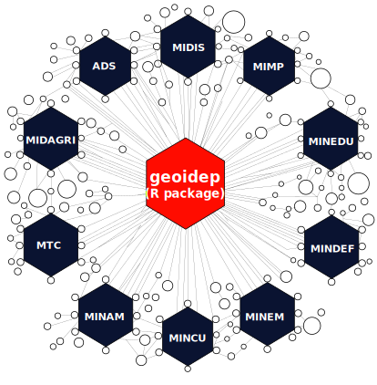

Download the forest and loss information from Geobosque
Source:R/get_forest_loss_data.R
get_forest_loss_data.RdThis function allows you to download the ubigeos corresponding to the official political division of the district, province or region boundaries of Peru with forest and loss information. For more information, you can visit the following website: https://geobosques.minam.gob.pe
Details
Available layers are:
stock_bosque_perdida_distrito: Returns data on forest stock, forest loss, rank loss for a given district.
stock_bosque_perdida_provincia: Returns data on forest stock, forest loss, rank loss for a given province.
stock_bosque_perdida_departamento: Returns data on forest stock, forest loss, rank loss for a given region.
Examples
# \donttest{
library(geoidep)
geobosque <- get_forest_loss_data(
layer = "stock_bosque_perdida_distrito",
ubigeo = "010101",
show_progress = FALSE)
head(geobosque)
#> anio perdida rango1 rango2 rango3 rango4 rango5 tipobosque ubigeo
#> 1 2001 0.54 0 0 0 0 0.54 1 010101
#> 2 2002 0.00 0 0 0 0 0.00 1 010101
#> 3 2003 1.53 0 0 0 0 1.53 1 010101
#> 4 2004 0.00 0 0 0 0 0.00 1 010101
#> 5 2005 1.26 0 0 0 0 1.26 1 010101
#> 6 2006 1.53 0 0 0 0 1.53 1 010101
# }